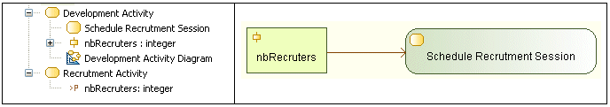

R1040¶
Summary¶
An ActivityParameterNode must represent a BehaviorParameter from the same containing Activity.
Details¶

In this example, the “nbRecruter” ActivityParameterNode is invalid because it represents a BehaviorParameter from another activity.
Tips¶
When you get a R1040 error, you can either:
- Replace the BehaviorParameter represented by the ActivityParameterNode by a BehaviorParameter contained in the same Activity that contains the ActivityParameterNode.
- Move the represented BehaviorParameter to the Activity that contains the ActivityParameterNode.